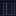

Fiber Cable
rackcraft:fiber_cable
Connects racks to routers, controllers and monitoring walls. Racks only earn credits over fiber that reaches a router.
Crafting
Glass pane
Glass pane
Glass pane
Connect racks over fiber to routers to sell compute. The Operations Terminal tracks RackCoin, contracts and clusters, and players near one are warned when an event starts. They are real: a utility outage cuts Utility Intakes; a cooling failure stops every sink; a heat wave makes intakes 4 C hotter and costs cooling towers 30%; a hardware failure burns one module per 64 racks into a Failed Module (never a Quantum Core or Wafer-Scale Engine, and never once Predictive Maintenance is researched); a cable cut cuts a cable; and a surge reboots every rack on a power network with no battery on it.
Connects racks to routers, controllers and monitoring walls. Racks only earn credits over fiber that reaches a router.
Provides 100 units of bandwidth to its fiber network. A rack needs bandwidth equal to its mining rate in RC/s; with less, earnings are scaled down proportionally.
A backbone router that provides 1,000 units of bandwidth, enough for a full hall of GPU blades and quantum cores.

The backbone for Exascale halls: 16,000 units of bandwidth, sixteen Core Routers' worth, so one spine feeds four Exascale columns. Its light-pipe spine pulses violet while it carries traffic. Unlike lesser routers it needs power: 40 kW, and it carries nothing without it. It can't be crafted or bought: once Photonic Spine Fabric is researched, an Assembly Robot builds it from a Core Router with four more Core Routers, sixteen Photonic Interconnects, eight Superconducting Wire, eight Cryo Coils and two Wafer-Scale Engines, welded and riveted.
A wall display for the fiber network. Open it to see facility power, the hottest inlet and total load.